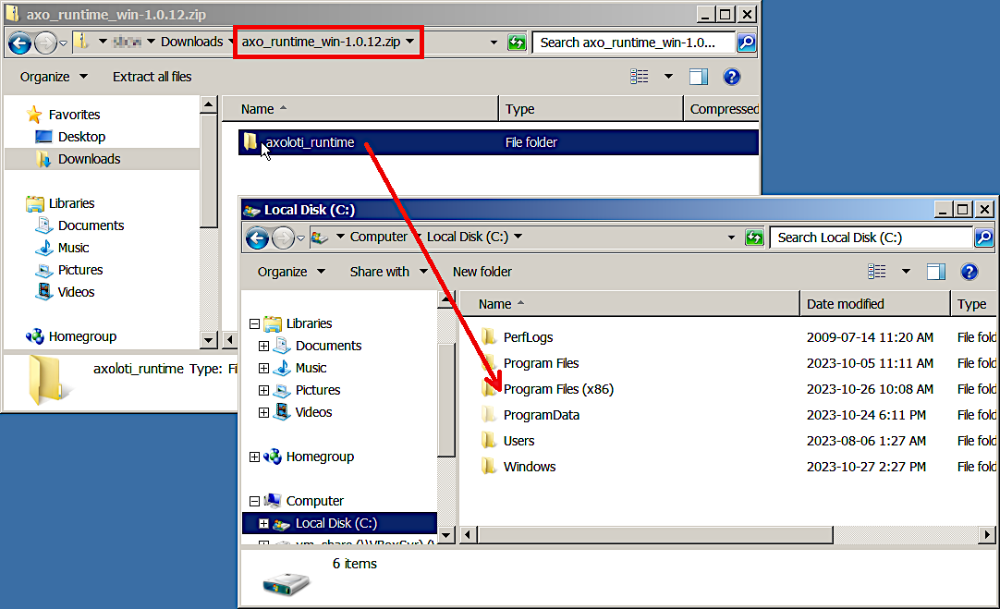
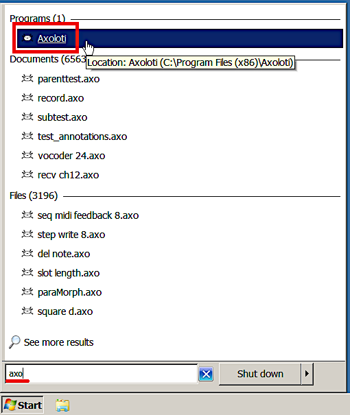
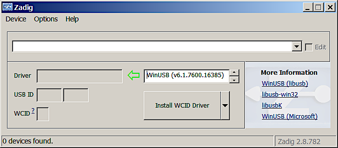
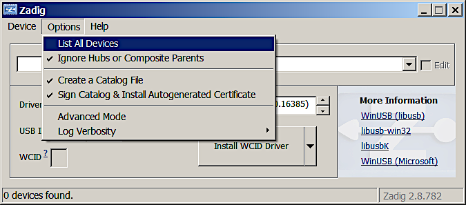
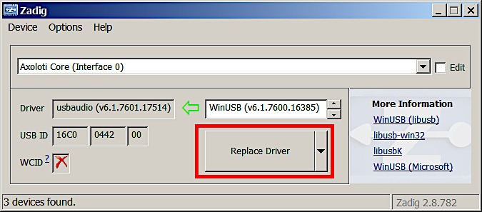

3.1. Install old Patcher on Windows

Main window of the Axoloti Patcher.
If you already have the original Axoloti Patcher installed, please skip to step 3. The runtime and Patcher you'd be installing in this guide is the exact same piece of software. Only the Firmware Dir needs to be changed and the ksoloti-objects need to be added to use the Patcher with the Ksoloti Core.
The install process for Ksoloti is identical to Axoloti with a few extra steps. To reduce size we split the application into two parts, the main Axoloti application, and a runtime which contains other required files. You must download and install both.
If your Ksoloti Core is currently connected via USB, disconnect it now.
-
Install the runtime. Head to the Axoloti Releases page on Github and download the latest axo_runtime_win-(version).zip (at the time of writing: axo_runtime_win-1.0.12.zip).

Open the zip file and move the folder axoloti_runtime to
-
C:\Program Files (x86)\(64-bit Windows), or -
C:\Program Files\(32-bit Windows)
Check that you have the correct folder structure:
-
C:\Program Files (x86)\axoloti_runtime\platform_win, or -
C:\Program Files\axoloti_runtime\platform_win
The Axoloti runtime is now installed. You will not have to move or edit it unless there is a big update, or you reinstall your OS, etc.
-
-
Install the Patcher. From the link in step 1, download the newest
axoloti-win-(version).msi(at the time of writing: axoloti-win-1.0.12-2-java1.8.0-191-wix3.11.msi) and execute it.
If you get a warning from Windows about running an untrusted program, this is due to it not being signed. You can safely ignore this. Click on Run Anyway (or similar).
Go through the installation process.
-
The Patcher is now installed. Now we need to link it to the custom Ksoloti firmware. Head to the Ksoloti repository on Github and download the source code as a zip file.

Extract the file
ksoloti-master.zip(or similar) to a location of your choice. I usually place it in My Documents. -
Open the start menu, type in Axoloti, and start it (this is the Patcher).

-
In the Patcher, open the File menu and click on Preferences... In the resulting window you will see an option called Firmware Dir.
Click on Select and navigate to the path where you extracted the Ksoloti zip from step 3. Then find the subfolder
\firmwarein theksoloti-masterfolder (or similar) and click Open.
When you're done the Firmware Dir field should read something like
[...]\ksoloti-master\firmware. It is important that you point the directory to the[...]\firmwaresubfolder. In this example I decided to place the ksoloti-master folder in my Documents folder. Click OK.
-
Close the Patcher and restart it for the new firmware path to take effect.
-
Let's do a first test to make sure all the directories are correctly set. Open the Board menu and click Firmware > Compile. There should be a lot of text running across the console and it should end with the message Done compiling firmware. This is good news – everything is set up correctly so far!

-
We now need to tell the Patcher to fetch the custom ksoloti-objects repository for us. It contains the custom objects so that you can use all GPIO and functions of the Ksoloti Core.
Open the File menu and click on Preferences... again. In the resulting window you will see a table containing items like “factory”, “home” and “community”. Click on the “+” button to the right of it.

The “add library” window will appear. This is where we set up the remote address to the ksoloti-objects repository. Enter the following settings:
Type:
gitID:
ksoloti-objectsDirectory: Click Select and select a folder of your choice. Then, add the string
Remote Path:\ksoloti-objects\to the path in the text field. This will let Git automatically create the folderksoloti-objectsin the folder you have selected. In this example I again chose my Documents folder then added\ksoloti-objects\to the end of the path. Make sure there is a backslash "\" at the end of the path.https://github.com/ksoloti/ksoloti-objects.git
Click Init and confirm. This should create the
ksoloti-objectsfolder in your selected folder and fill it with the custom Ksoloti objects so the Patcher can find and use them. Click OK, and OK again to close the preferences. -
Connect the Ksoloti Core board. Windows will install the necessary drivers (if they are not already installed) and create a USB device called Ksoloti Core.
If you get an error or if there is a yellow question mark next to the Ksoloti Core in your Device Manager, you will have to use Zadig to install a working driver.
Download and run the newest
zadig_(version).exefrom Zadig.Click Options > List all devices.
Select the Ksoloti Core (or similar) from the drop-down menu, and click Replace Driver (or similar). The default settings are fine.
Wait until it is finished then disconnect and reconnect your Ksoloti Core.
-
In the Patcher, click on Connect. You might get a Firmware CRC mismatch warning. This is because the firmware has been updated since your Ksoloti board was shipped. Click Yes.

The Patcher should update the board automatically. Wait until it is done. When only the green LED lights up steady, you can click on Connect again.

Congratulations, you're done with the tedious setup process and finally ready to open some patches!
As of now, either Axoloti Core or Ksoloti Core can connect to the Patcher at a time, not simultaneously. This is because the Patcher was not written with supporting multiple boards in mind. If you ever want to revert the Patcher to connect to Axoloti Core, all you have to do is set the Firmware Dir back to C:\Program Files (c86)\Axoloti\app\firmware like in the first screenshot in step 5, then restart the Patcher.
We are working on a standalone Ksoloti version for the Patcher. This will simplify the installation and make it possible to run the original Patcher with your Axoloti Core, and the Ksoloti Patcher with the Ksoloti Core at the same time.